# Util libs
library(assertthat)
library(ggplot2)
library(zeallot)
library(conflicted)
library(Matrix)
# Data processing libs
require(COTAN)
library(SingleCellExperiment)
library(S4Vectors)
library(hdf5r)
library(hdf5r.Extra)
conflicts_prefer(zeallot::`%->%`, zeallot::`%<-%`)
conflicts_prefer(base::setdiff)
conflicts_prefer(base::unname)
options(parallelly.fork.enable = TRUE)
setLoggingLevel(2L)PBMC_Brown_preview
Preamble
List input files
#inDir <- file.path("Data/Brown_PBMC_Datasets/OriginalData/")
#outDir <- file.path("Data/Brown_PBMC_Datasets/")
inDir <- file.path("OriginalData/")
outDir <- file.path(".")
setLoggingFile(file.path(inDir, "Dataset_Extraction.log"))
list.files(path = inDir)[1] "Dataset_Extraction.log"
[2] "imyoo_capillary_blood_samples_76535_pbmcs.h5ad"h5adFile <- "imyoo_capillary_blood_samples_76535_pbmcs.h5ad"
globalCondition <- "capillary_blood_samples_pbmcs"Inspect h5ad file
h5 <- H5File$new(paste(inDir,h5adFile,sep = "/"), mode = "r")
for (nm in names(h5)) {
cat("Name:", nm, " -> class:", class(h5[[nm]]), "\n")
}
h5$close_all()Load matrices and genes/cells meta-data
## 1) counts: layers/counts -> genes × cells
counts <- h5Read(paste(inDir,h5adFile,sep = "/"), name = "layers/counts", transpose = FALSE)
# counts: rows = genes, cols = cells
## 2) obs / var (you already handled categoricals)
obs <- h5Read(paste(inDir,h5adFile,sep = "/"), name = "obs")
var <- h5Read(paste(inDir,h5adFile,sep = "/"), name = "var")
nGenes <- nrow(var)
nCells <- nrow(obs)
stopifnot(
nGenes == nrow(counts),
nCells == ncol(counts)
)
## Ensure row/colnames are consistent
# AnnData convention: obs index = cell IDs, var index = gene IDs
if (is.null(rownames(obs))) {
# if needed, derive from a specific column
# rownames(obs) <- obs$some_cell_id_column
}
if (is.null(rownames(var))) {
# rownames(var) <- var$some_gene_id_column
}
# Now align the matrix names to metadata
if (is.null(colnames(counts))) colnames(counts) <- rownames(obs)
if (is.null(rownames(counts))) rownames(counts) <- rownames(var)
assert_that(
identical(colnames(counts), rownames(obs)),
identical(rownames(counts), rownames(var))
)[1] TRUERetrieve clusterizations as factors
readAnnDataCategorical <- function(colGroup, nObs) {
encType <- h5attr(colGroup, "encoding-type")
if (!identical(encType, "categorical")) {
stop("Group does not have encoding-type = 'categorical'")
}
codes <- colGroup[["codes"]][] # length nObs, usually 0-based, with -1 for NA
cats <- colGroup[["categories"]][] # character vector of categories
codes <- as.integer(codes)
res <- rep(NA_character_, length(codes))
# AnnData uses 0-based codes; adjust to 1-based R indices
valid <- codes >= 0L
res[valid] <- cats[codes[valid] + 1L]
factor(res, levels = cats)
}
catCols <- c(
"cell_type_level_1", "cell_type_level_2",
"cell_type_level_3", "cell_type_level_4",
"c1", "c2", "c3", "c4"
)
h5 <- H5File$new(paste(inDir,h5adFile,sep = "/"), mode = "r")
obsGroup <- h5[["obs"]]
names(obsGroup) [1] "Cell Barcoding Runs" "Lane"
[3] "Participant IDs" "Sample IDs"
[5] "_index" "barcode"
[7] "c1" "c2"
[9] "c3" "c4"
[11] "cell_barcoding_delay_days" "cell_barcoding_protocol"
[13] "cell_type_level_1" "cell_type_level_2"
[15] "cell_type_level_3" "cell_type_level_4"
[17] "extraction_protocol" "original_sample_id"
[19] "run_lane_batch" "sample_processing_delay_seconds"nObs <- nrow(obs) # 76535
for (nm in catCols) {
if (nm %in% names(obsGroup)) {
obs[[nm]] <- readAnnDataCategorical(obsGroup[[nm]], nObs)
} else {
warning(sprintf("Column %s not found in obs group", nm))
}
}
h5$close_all()
table(obs$cell_type_level_3, useNA = "ifany")
pDC CD4 T Cells
444 23534
Gamma-Delta T Cells cDC2
1924 324
Intermediate Monocytes cDC3
1899 258
CD56 Bright NK Cells tumorDC
398 2
CLL-associated B Cells Classical Memory B Cells
11 558
Mucosal-Associated Invariant T Cells Plasma B Cells
1621 202
CD56 Dim NK Cells Classical Monocytes
5178 7848
CD8 T Cells Nonclassical Monocytes
10636 2054
Naive B Cells asDC
3610 15
Mast Cells IgM Memory B Cells
2 1001
Classical Monocytes - HSP artifact Age-associated B Cells
32 85
Adaptive NK Cells <NA>
285 14614 Create SingleCellExperiment
sce <- SingleCellExperiment(
assays = list(
counts = counts
)
)
# Attach metadata
colData(sce) <- DataFrame(obs) # cells metadata
rowData(sce) <- DataFrame(var) # genes metadata
# load processed matrices
if (FALSE) {
X <- h5Read(paste(inDir,h5adFile,sep = "/"), name = "X", transpose = FALSE) # genes × cells
assert_that(all(dim(X) == dim(counts)))
assays(sce)[["logcounts"]] <- X # or "normcounts", depending on what X really is
}
if (FALSE) {
obsm <- h5Read(paste(inDir,h5adFile,sep = "/"), name = "obsm")
names(obsm)
# e.g. "X_pca", "X_umap", "X_tsne", ...
# Simple mapping from AnnData keys to SCE reducedDim names
rdMap <- c(
X_pca = "PCA",
X_umap = "UMAP",
X_tsne = "TSNE",
X_mde = "MDE",
X_scvi = "SCVI"
)
for (key in intersect(names(obsm), names(rdMap))) {
mat <- obsm[[key]] # cells × k
# sanity check
stopifnot(nrow(mat) == ncol(sce))
reducedDims(sce)[[ rdMap[[key]] ]] <- as.matrix(mat)
}
}
uns <- h5Read(paste(inDir,h5adFile,sep = "/"), name = "uns")
# root-level attributes
h5 <- H5File$new(paste(inDir,h5adFile,sep = "/"), mode = "r")
rootAttrs <- h5attributes(h5)
h5$close_all()
# Store them in SCE metadata
metadata(sce)$uns <- uns
metadata(sce)$h5ad_attrs <- rootAttrs
metadata(sce)$source_file <- h5adFile
metadata(sce)$source_format <- "AnnData h5ad"Check all OK
sceclass: SingleCellExperiment
dim: 36601 76535
metadata(4): uns h5ad_attrs source_file source_format
assays(1): counts
rownames(36601): 1 2 ... 36600 36601
rowData names(2): name id
colnames(76535): 1090751 1091540 ... 3592412 3592420
colData names(19): barcode Sample.IDs ... c3 c4
reducedDimNames(0):
mainExpName: NULL
altExpNames(0):assayNames(sce)[1] "counts"colData(sce)[1:3, ]DataFrame with 3 rows and 19 columns
barcode Sample.IDs Participant.IDs Cell.Barcoding.Runs
<factor> <integer> <integer> <integer>
1090751 AGCGTCGCAGTGGCTC 329 51 41
1091540 AGGTGTTCAGGACAGT 329 51 41
1109713 TACCCGTCAAACGGCA 329 51 41
Lane extraction_protocol sample_processing_delay_seconds
<factor> <factor> <numeric>
1090751 2-B1 TAP II Heparin 2220
1091540 2-B1 TAP II Heparin 2220
1109713 2-B1 TAP II Heparin 2220
cell_barcoding_delay_days cell_barcoding_protocol run_lane_batch
<numeric> <factor> <factor>
1090751 37.8611 10X v3.1 3 Prime HT 41-2-B1
1091540 37.8611 10X v3.1 3 Prime HT 41-2-B1
1109713 37.8611 10X v3.1 3 Prime HT 41-2-B1
original_sample_id cell_type_level_1 cell_type_level_2
<integer> <factor> <factor>
1090751 260 Lymphoid T Cells
1091540 260 Lymphoid B Cells
1109713 260 Lymphoid T Cells
cell_type_level_3 cell_type_level_4 c1
<factor> <factor> <factor>
1090751 Mucosal-Associated Invariant T Cells NA Lymphoid
1091540 Naive B Cells NA Lymphoid
1109713 CD4 T Cells CD4 Naive T Cells Lymphoid
c2 c3
<factor> <factor>
1090751 T Cells Mucosal-Associated Invariant T Cells
1091540 B Cells Naive B Cells
1109713 T Cells CD4 T Cells
c4
<factor>
1090751 Mucosal-Associated Invariant T Cells
1091540 Naive B Cells
1109713 CD4 Naive T Cells rowData(sce)[1:3, ]DataFrame with 3 rows and 2 columns
name id
<factor> <character>
1 MIR1302-2HG ENSG00000243485
2 FAM138A ENSG00000237613
3 OR4F5 ENSG00000186092reducedDimNames(sce)character(0)names(metadata(sce))[1] "uns" "h5ad_attrs" "source_file" "source_format"table(colData(sce)[, "cell_barcoding_protocol"],colData(sce)[, "Lane"])
1 1-A 1-A1 1-B 1-B1 2 2-A 2-A1 2-B
10X v3.1 3 Prime 5161 0 0 0 0 3877 0 0 0
10X v3.1 3 Prime HT 0 12892 2346 13283 3687 0 11800 3657 13371
2-B1 3-A1 3-B1
10X v3.1 3 Prime 0 0 0
10X v3.1 3 Prime HT 3667 1376 1418Convert SCE objects to COTAN
table(colData(sce)[, "run_lane_batch"])
28-1 40-1-A1 40-1-B1 40-2-A1 40-2-B1 41-1-B1 41-2-A1 41-2-B1 41-3-A1 41-3-B1
1148 2346 2217 2227 2235 1470 1430 1432 1376 1418
62-1-A 62-1-B 62-2-A 62-2-B 77-1 77-2
12892 13283 11800 13371 4013 3877 table(colData(sce)[, "Cell.Barcoding.Runs"],colData(sce)[, "Lane"])
1 1-A 1-A1 1-B 1-B1 2 2-A 2-A1 2-B 2-B1 3-A1 3-B1
28 1148 0 0 0 0 0 0 0 0 0 0 0
40 0 0 2346 0 2217 0 0 2227 0 2235 0 0
41 0 0 0 0 1470 0 0 1430 0 1432 1376 1418
62 0 12892 0 13283 0 0 11800 0 13371 0 0 0
77 4013 0 0 0 0 3877 0 0 0 0 0 0## helper: convert a single SCE + its global attrs into a COTAN object
sceToCotan <- function(sce, globalAttrs = list()) {
# 1. SCE -> COTAN (handles counts, rowData, colData, cluster columns, etc.)
objCOTAN <- convertFromSingleCellExperiment(objSCE = sce)
# 1.1 Override col/row names to proper cells/genes names
rownames(objCOTAN@raw) <- make.unique(factorToVector(rowData(sce)[, "name"]))
colnames(objCOTAN@raw) <- make.unique(factorToVector(colData(sce)[, "barcode"]))
# 2. Initialize metaDataset with standard tags (use whatever you have)
# If your globalAttrs already contain these, pick from there.
geoVal <-
if ("GEO" %in% names(globalAttrs)) globalAttrs[["GEO"]] else ""
seqVal <-
if ("method" %in% names(globalAttrs)) globalAttrs[["method"]] else ""
condVal <-
if ("condition" %in% names(globalAttrs)) globalAttrs[["condition"]] else ""
objCOTAN <- initializeMetaDataset(
objCOTAN,
GEO = as.character(geoVal),
sequencingMethod = as.character(seqVal),
sampleCondition = as.character(condVal)
)
# 3. Add all remaining global attributes as extra metadata rows
usedTags <- c("GEO", "method", "condition")
extraTags <- base::setdiff(names(globalAttrs), usedTags)
for (tag in extraTags) {
val <- globalAttrs[[tag]]
# COTAN expects a character vector; coerce anything else
objCOTAN <- addElementToMetaDataset(
objCOTAN,
tag = tag,
value = as.character(val)
)
}
validObject(objCOTAN)
objCOTAN
}Create the COTAN object
objCOTAN <- sceToCotan(sce, globalAttrs = metadata(sce))
metaCellsNames <- colnames(getMetadataCells(objCOTAN))
metaCellsNames [1] "barcode" "Sample.IDs"
[3] "Participant.IDs" "Cell.Barcoding.Runs"
[5] "Lane" "extraction_protocol"
[7] "sample_processing_delay_seconds" "cell_barcoding_delay_days"
[9] "cell_barcoding_protocol" "run_lane_batch"
[11] "original_sample_id" "cell_type_level_1"
[13] "cell_type_level_2" "cell_type_level_3"
[15] "cell_type_level_4" "c1"
[17] "c2" "c3"
[19] "c4" for (clName in metaCellsNames[12:19]) {
clusters <- factor(getMetadataCells(objCOTAN)[[clName]])
levels(clusters)[is.na(levels(clusters))] <- "NA"
names(clusters) <- getCells(objCOTAN)
objCOTAN <- addClusterization(objCOTAN, clName = clName, clusters = clusters)
}
for (condName in metaCellsNames[c(2:5, 9:11)]) {
condition <- getMetadataCells(objCOTAN)[[condName]]
names(condition) <- getCells(objCOTAN)
objCOTAN <- addCondition(objCOTAN, condName = condName, conditions = condition)
}
objCOTAN <- addElementToMetaDataset(objCOTAN,
datasetTags()[["cond"]],
globalCondition)
print(getMetadataDataset(objCOTAN)[, 1:2]) V1 V2
1 GEO:
2 scRNAseq method:
3 condition sample: capillary_blood_samples_pbmcs
4 starting n. of cells: 76535
5 genes' COEX is in sync: FALSE
6 cells' COEX is in sync: FALSE
7 uns 7a43ba6d-7f13-4ac1-8d69-bcdf4aa3d905
8 h5ad_attrs anndata
9 source_file imyoo_capillary_blood_samples_76535_pbmcs.h5ad
10 source_format AnnData h5adcellSizePlot(objCOTAN, condName = "cell_barcoding_protocol")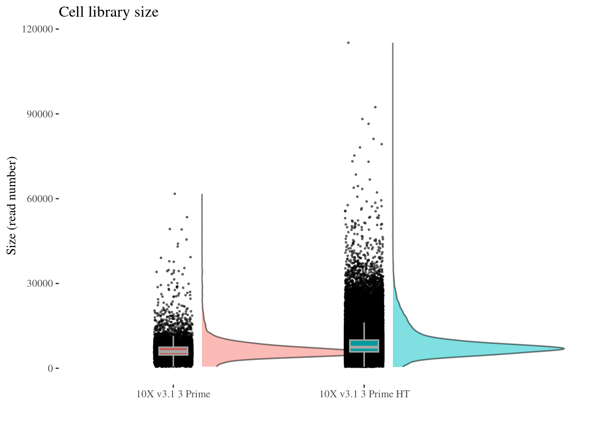
cellSizePlot(objCOTAN, condName = "Lane")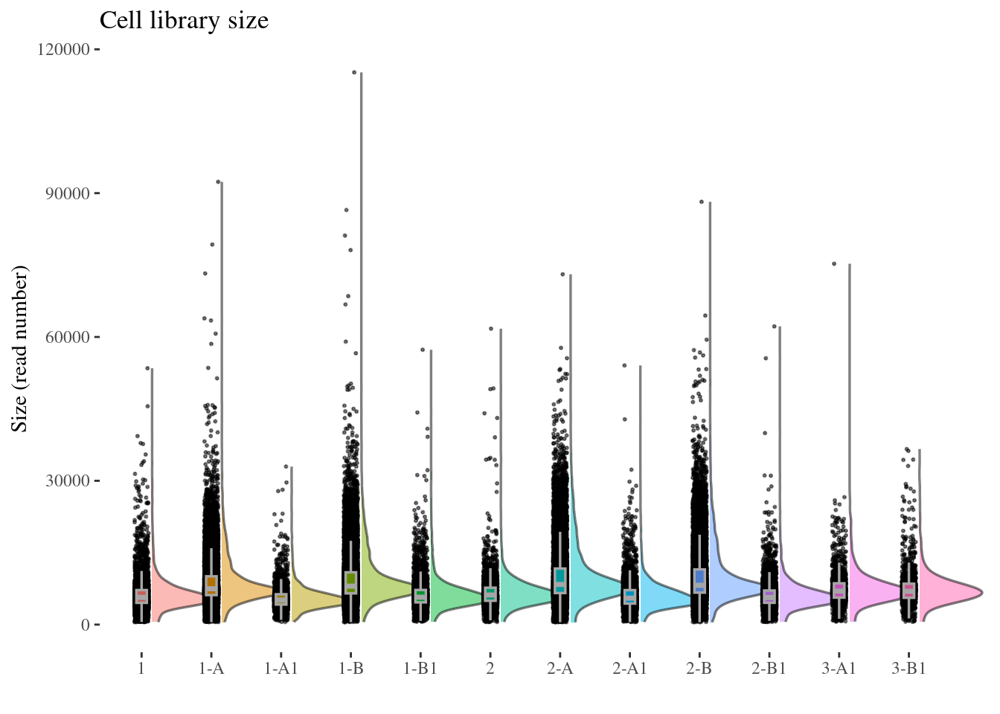
genesSizePlot(objCOTAN, condName = "cell_barcoding_protocol")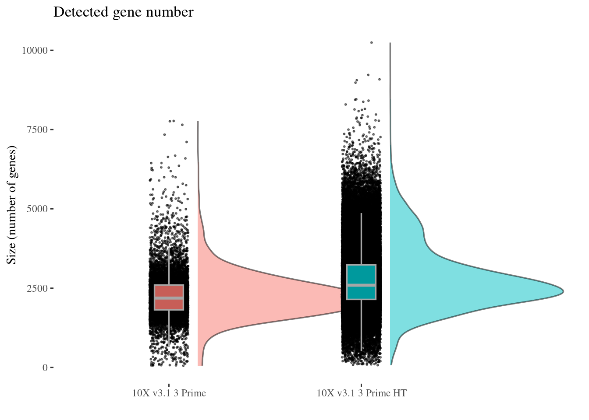
genesSizePlot(objCOTAN, condName = "Lane")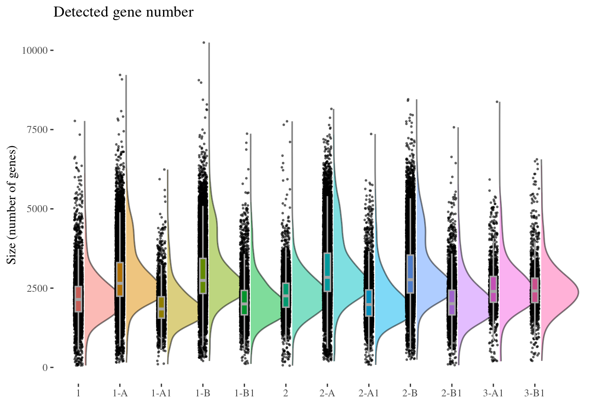
objCOTAN <- clean(objCOTAN)
c(pcaCellsData=, UDE=) %<-% cleanPlots(objCOTAN, includePCA = TRUE)
print(unique(getCondition(objCOTAN, "Lane"))) [1] 2-B1 1-A1 2-A1 3-B1 1-B1 3-A1 1 2-A 2-B 1-B 1-A 2
Levels: 1 1-A 1-A1 1-B 1-B1 2 2-A 2-A1 2-B 2-B1 3-A1 3-B1pcaCellsData <- setColumnInDF(pcaCellsData, colName = "Lane",
colToSet = getCondition(objCOTAN, "Lane"))
pcaPlot <-
ggplot(pcaCellsData, aes(PC1, PC2, color = Lane)) +
geom_point(size = 0.1)
c(umapPlot, .) %<-%
cellsUMAPPlot(
objCOTAN,
clusters = getCondition(objCOTAN, "Lane"),
useCoexEigen = FALSE,
dataMethod = "LN",
genesSel = "HVG_Seurat")plot(UDE)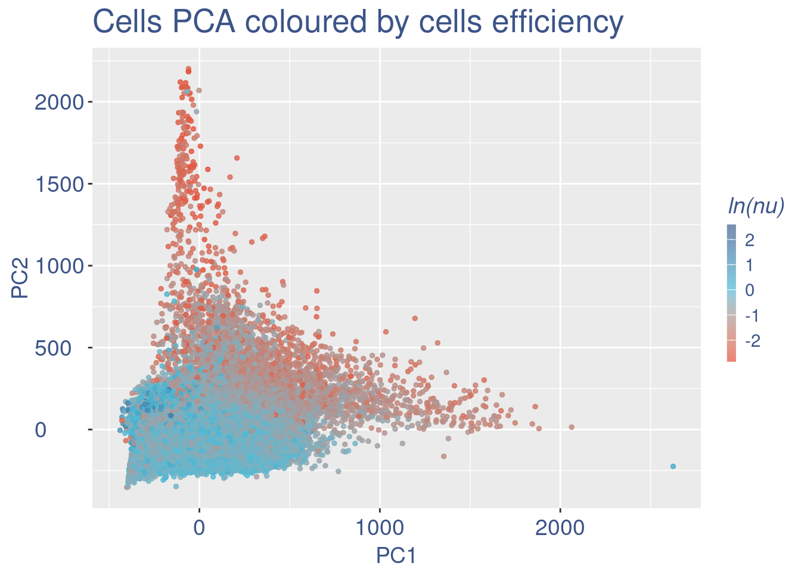
plot(pcaPlot)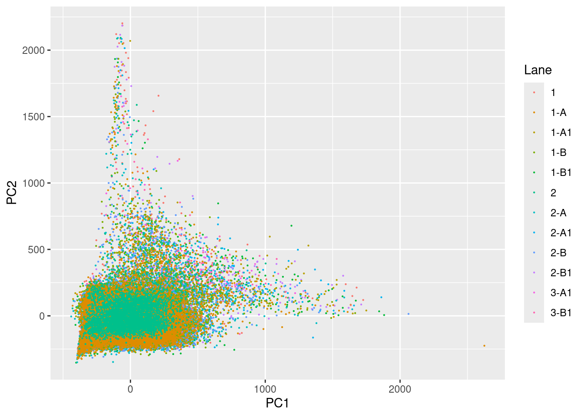
plot(umapPlot)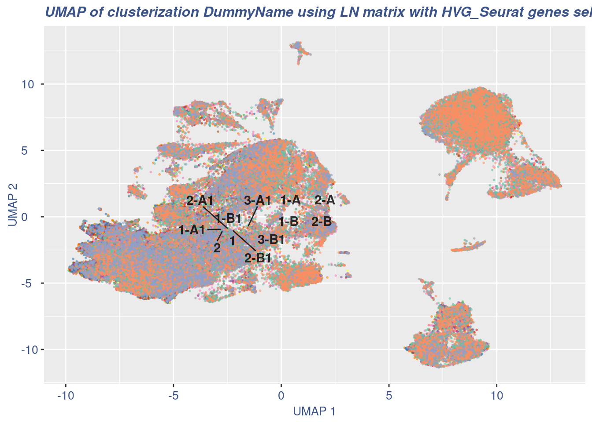
Notice that the 10x v3.1 Prime HT has different general statistics
Save the COTAN object
fileOut <- file.path(outDir, paste0(globalCondition, ".RDS"))
saveRDS(objCOTAN, file = fileOut)Split object by run
runs <- getCondition(objCOTAN, condName = "Cell.Barcoding.Runs")
singleRunObjects <- list()
for (aRun in levels(runs)) {
cellsToDrop <- getCells(objCOTAN)[runs != aRun]
print(getNumCells(objCOTAN) - length(cellsToDrop))
splitObj <- dropGenesCells(objCOTAN, cells = cellsToDrop)
splitObj <- addElementToMetaDataset(splitObj,
datasetTags()[["cond"]],
paste0(globalCondition, "-Run_", aRun))
singleRunObjects[[aRun]] <- splitObj
}[1] 1148
[1] 9025
[1] 7126
[1] 51346
[1] 7890Save all split objects
for (aRun in levels(runs)) {
cat("Run: ", aRun, "\tNum Cells: ", getNumCells(singleRunObjects[[aRun]]), "\n")
cond <- getMetadataElement(singleRunObjects[[aRun]], datasetTags()[["cond"]])[[1L]]
fileOut <- file.path(outDir, paste0(cond, ".RDS"))
saveRDS(singleRunObjects[[aRun]], file = fileOut)
}Selected runs: those with medium size
40, 41, 77
Runs 77 and 28 are basic (v3.1 Prime) while runs 40, 41, and 62 are HT
Check Runs are uniform across Lanes
Lane number 40
subObj <- clean(singleRunObjects[["40"]])
assert_that(1L == length(unique(getCondition(subObj, "Cell.Barcoding.Runs"))))[1] TRUEc(pcaCellsData=, UDE=) %<-% cleanPlots(subObj, includePCA = TRUE)
print(unique(getCondition(subObj, "Lane")))[1] 1-A1 2-A1 2-B1 1-B1
Levels: 1 1-A 1-A1 1-B 1-B1 2 2-A 2-A1 2-B 2-B1 3-A1 3-B1pcaCellsData <- setColumnInDF(pcaCellsData, colName = "Lane",
colToSet = getCondition(subObj, "Lane"))
pcaPlot <-
ggplot(pcaCellsData, aes(PC1, PC2, color = Lane)) +
geom_point(size = 0.1)
c(umapPlot, .) %<-%
cellsUMAPPlot(
subObj,
clusters = getCondition(subObj, "Lane"),
useCoexEigen = FALSE,
dataMethod = "LN",
genesSel = "HVG_Seurat")plot(UDE)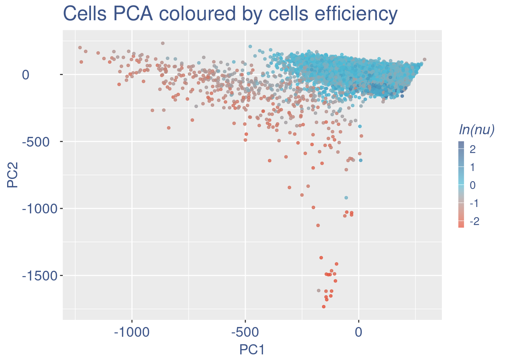
plot(pcaPlot)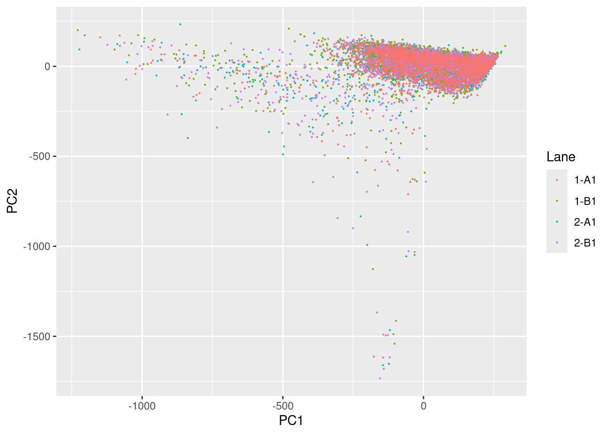
plot(umapPlot)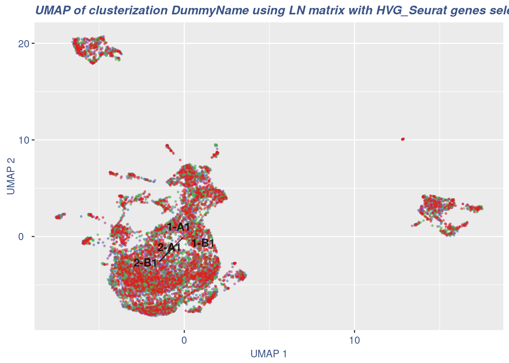
subObj <- proceedToCoex(subObj,calcCoex = T,cores = 5)
c(umapPlot2, .) %<-%
cellsUMAPPlot(
subObj,
clusters = getCondition(subObj, "Lane"),
useCoexEigen = TRUE,
dataMethod = "LN",
genesSel = "HGDI")plot(umapPlot2)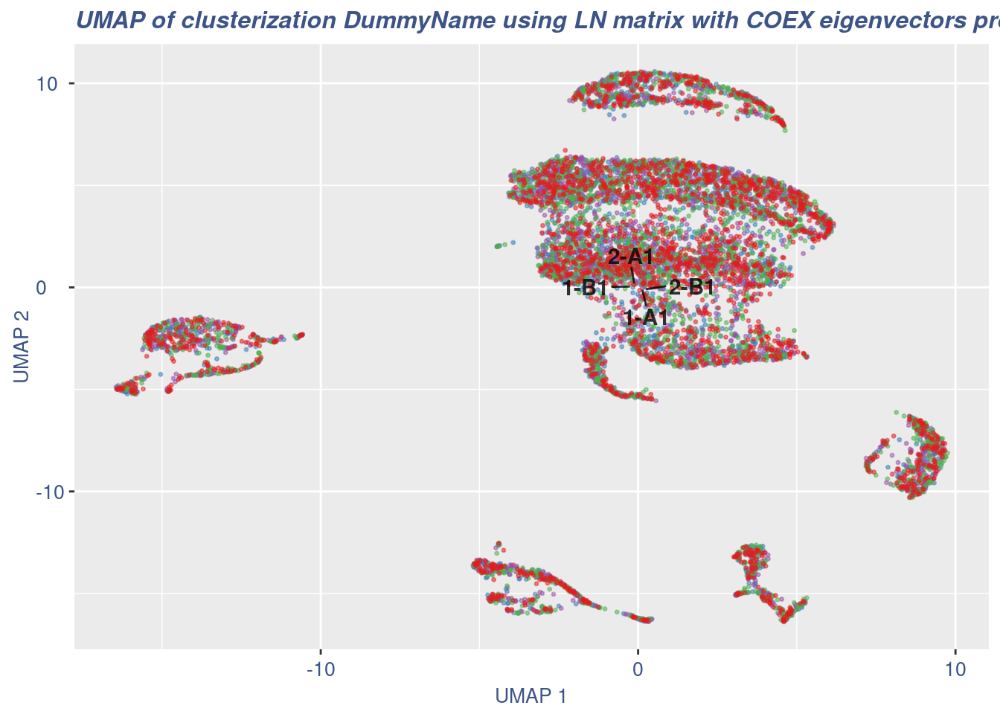
Lane number 77
subObj <- clean(singleRunObjects[["77"]])
assert_that(1L == length(unique(getCondition(subObj, "Cell.Barcoding.Runs"))))[1] TRUEc(pcaCellsData=, UDE=) %<-% cleanPlots(subObj, includePCA = TRUE)
print(unique(getCondition(subObj, "Lane")))[1] 1 2
Levels: 1 1-A 1-A1 1-B 1-B1 2 2-A 2-A1 2-B 2-B1 3-A1 3-B1pcaCellsData <- setColumnInDF(pcaCellsData, colName = "Lane",
colToSet = getCondition(subObj, "Lane"))
pcaPlot <-
ggplot(pcaCellsData, aes(PC1, PC2, color = Lane)) +
geom_point(size = 0.1)
c(umapPlot, .) %<-%
cellsUMAPPlot(
subObj,
clusters = getCondition(subObj, "Lane"),
useCoexEigen = FALSE,
dataMethod = "LN",
genesSel = "HVG_Seurat")plot(UDE)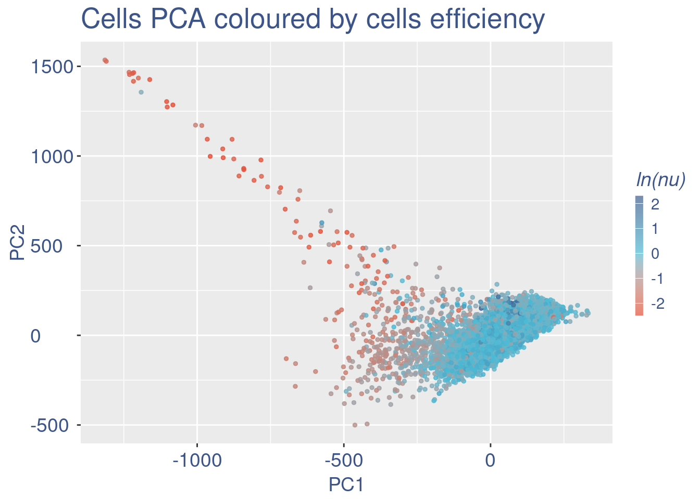
plot(pcaPlot)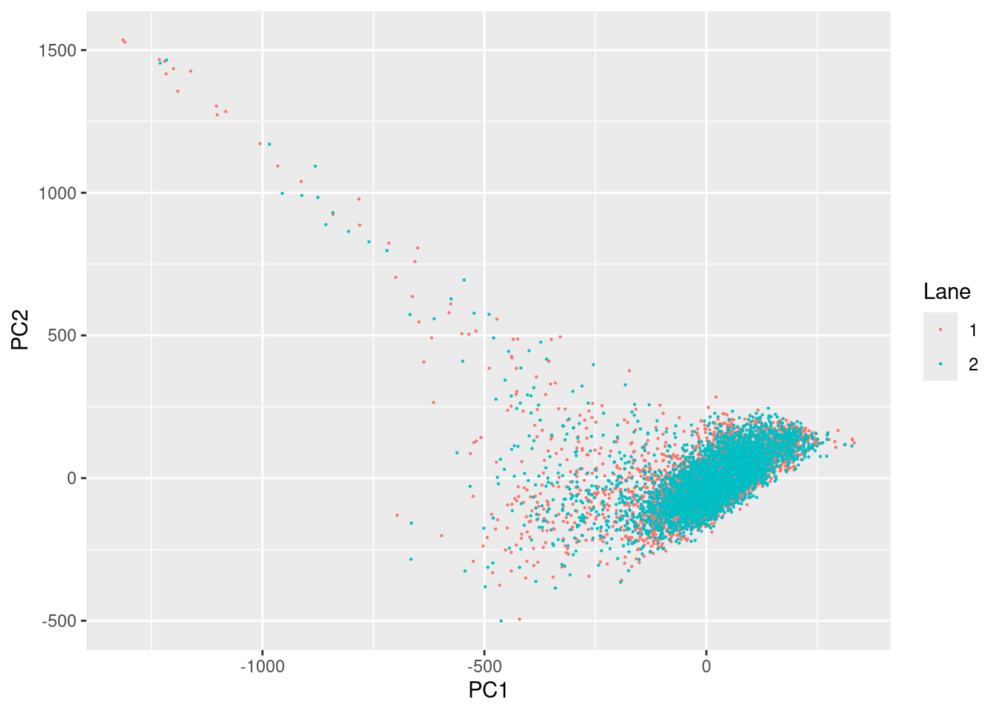
plot(umapPlot)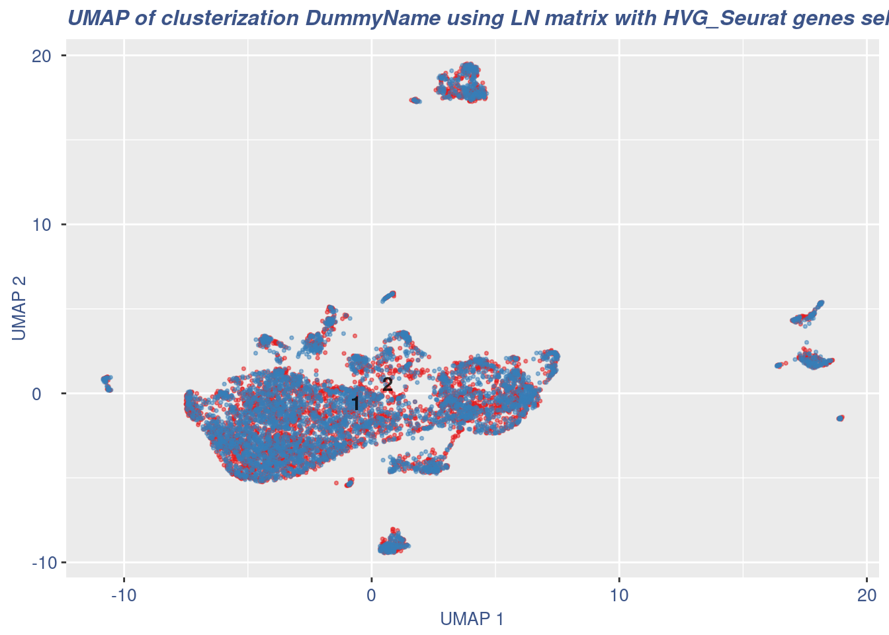
Sys.time()[1] "2026-01-04 12:33:38 CET"sessionInfo()R version 4.5.2 (2025-10-31)
Platform: x86_64-pc-linux-gnu
Running under: Ubuntu 22.04.5 LTS
Matrix products: default
BLAS: /usr/lib/x86_64-linux-gnu/blas/libblas.so.3.10.0
LAPACK: /usr/lib/x86_64-linux-gnu/lapack/liblapack.so.3.10.0 LAPACK version 3.10.0
locale:
[1] LC_CTYPE=C.UTF-8 LC_NUMERIC=C LC_TIME=C.UTF-8
[4] LC_COLLATE=C.UTF-8 LC_MONETARY=C.UTF-8 LC_MESSAGES=C.UTF-8
[7] LC_PAPER=C.UTF-8 LC_NAME=C LC_ADDRESS=C
[10] LC_TELEPHONE=C LC_MEASUREMENT=C.UTF-8 LC_IDENTIFICATION=C
time zone: Europe/Rome
tzcode source: system (glibc)
attached base packages:
[1] stats4 stats graphics grDevices utils datasets methods
[8] base
other attached packages:
[1] hdf5r.Extra_0.1.0 hdf5r_1.3.12
[3] SingleCellExperiment_1.32.0 SummarizedExperiment_1.38.1
[5] Biobase_2.68.0 GenomicRanges_1.60.0
[7] GenomeInfoDb_1.44.0 IRanges_2.44.0
[9] S4Vectors_0.48.0 BiocGenerics_0.54.0
[11] generics_0.1.3 MatrixGenerics_1.20.0
[13] matrixStats_1.5.0 COTAN_2.11.1
[15] Matrix_1.7-4 conflicted_1.2.0
[17] zeallot_0.2.0 ggplot2_4.0.1
[19] assertthat_0.2.1
loaded via a namespace (and not attached):
[1] RcppAnnoy_0.0.22 splines_4.5.2 later_1.4.2
[4] tibble_3.3.0 polyclip_1.10-7 fastDummies_1.7.5
[7] lifecycle_1.0.4 doParallel_1.0.17 processx_3.8.6
[10] globals_0.18.0 lattice_0.22-7 MASS_7.3-65
[13] backports_1.5.0 ggdist_3.3.3 dendextend_1.19.0
[16] magrittr_2.0.4 plotly_4.11.0 rmarkdown_2.29
[19] yaml_2.3.10 httpuv_1.6.16 Seurat_5.2.1
[22] sctransform_0.4.2 spam_2.11-1 sp_2.2-0
[25] spatstat.sparse_3.1-0 reticulate_1.42.0 cowplot_1.2.0
[28] pbapply_1.7-2 RColorBrewer_1.1-3 abind_1.4-8
[31] Rtsne_0.17 purrr_1.2.0 coro_1.1.0
[34] torch_0.14.2 circlize_0.4.16 GenomeInfoDbData_1.2.14
[37] ggrepel_0.9.6 irlba_2.3.5.1 listenv_0.9.1
[40] spatstat.utils_3.1-4 goftest_1.2-3 RSpectra_0.16-2
[43] spatstat.random_3.4-1 fitdistrplus_1.2-2 parallelly_1.46.0
[46] codetools_0.2-20 DelayedArray_0.34.1 tidyselect_1.2.1
[49] shape_1.4.6.1 UCSC.utils_1.4.0 farver_2.1.2
[52] ScaledMatrix_1.16.0 viridis_0.6.5 spatstat.explore_3.4-2
[55] jsonlite_2.0.0 GetoptLong_1.0.5 progressr_0.15.1
[58] ggridges_0.5.6 survival_3.8-3 iterators_1.0.14
[61] foreach_1.5.2 tools_4.5.2 ica_1.0-3
[64] Rcpp_1.0.14 glue_1.8.0 gridExtra_2.3
[67] SparseArray_1.10.8 xfun_0.52 distributional_0.5.0
[70] ggthemes_5.2.0 dplyr_1.1.4 withr_3.0.2
[73] fastmap_1.2.0 callr_3.7.6 digest_0.6.37
[76] rsvd_1.0.5 parallelDist_0.2.6 R6_2.6.1
[79] mime_0.13 colorspace_2.1-1 scattermore_1.2
[82] tensor_1.5 spatstat.data_3.1-6 tidyr_1.3.1
[85] data.table_1.17.0 httr_1.4.7 htmlwidgets_1.6.4
[88] S4Arrays_1.10.1 uwot_0.2.3 pkgconfig_2.0.3
[91] gtable_0.3.6 ComplexHeatmap_2.26.0 lmtest_0.9-40
[94] S7_0.2.1 XVector_0.50.0 htmltools_0.5.8.1
[97] dotCall64_1.2 zigg_0.0.2 clue_0.3-66
[100] SeuratObject_5.1.0 scales_1.4.0 png_0.1-8
[103] spatstat.univar_3.1-3 knitr_1.50 reshape2_1.4.4
[106] rjson_0.2.23 checkmate_2.3.2 nlme_3.1-168
[109] proxy_0.4-27 cachem_1.1.0 zoo_1.8-14
[112] GlobalOptions_0.1.2 stringr_1.6.0 KernSmooth_2.23-26
[115] parallel_4.5.2 miniUI_0.1.2 pillar_1.10.2
[118] grid_4.5.2 vctrs_0.6.5 RANN_2.6.2
[121] promises_1.3.2 BiocSingular_1.26.1 beachmat_2.26.0
[124] xtable_1.8-4 cluster_2.1.8.1 evaluate_1.0.3
[127] cli_3.6.5 compiler_4.5.2 rlang_1.1.6
[130] crayon_1.5.3 future.apply_1.20.0 labeling_0.4.3
[133] easy.utils_0.1.0 ps_1.9.1 plyr_1.8.9
[136] stringi_1.8.7 viridisLite_0.4.2 deldir_2.0-4
[139] BiocParallel_1.44.0 lazyeval_0.2.2 spatstat.geom_3.4-1
[142] RcppHNSW_0.6.0 patchwork_1.3.2 bit64_4.6.0-1
[145] future_1.58.0 shiny_1.11.0 ROCR_1.0-11
[148] Rfast_2.1.5.1 igraph_2.1.4 memoise_2.0.1
[151] RcppParallel_5.1.10 fastmatch_1.1-6 bit_4.6.0